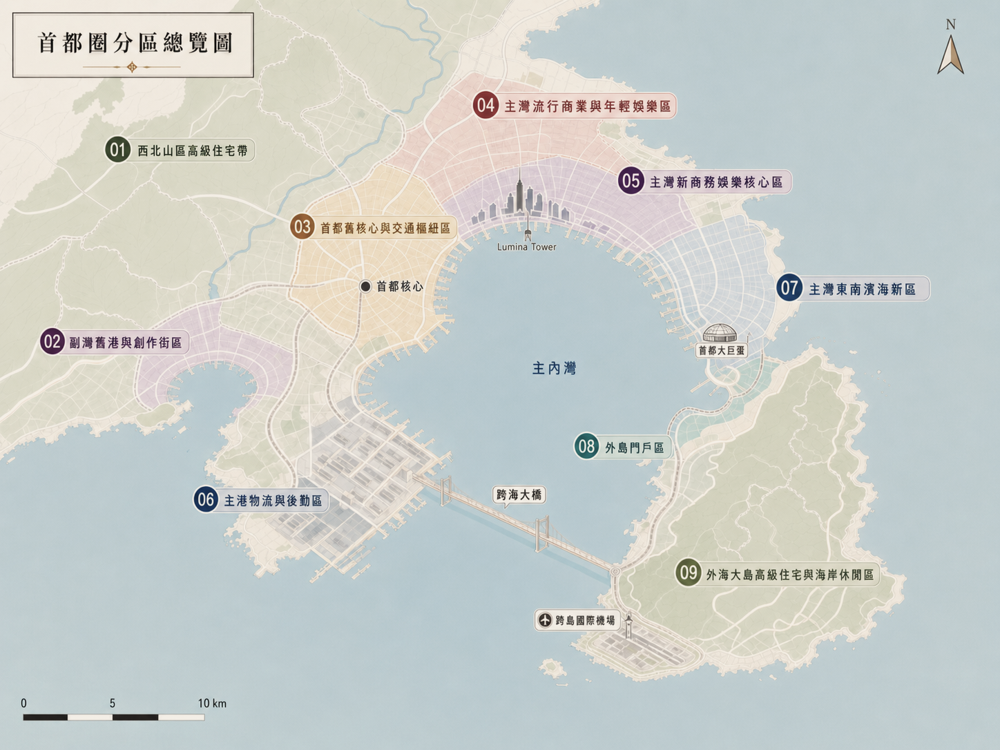

World Archive · eCLIPSe.Box-log
The Fictional Coordinates Behind the Virtual Stage
eCLIPSe，他們透過音樂、影像、互動文本與社群回應被認識，也透過這座城市擁有自己的舞台、路線與生活座標。
這裡不是單純紀錄封閉的架空世界，而是虛擬偶像在光與影，數位與物理現實的狹縫中如何存在。
World Premise
這座城市，是承載他們生活痕跡的空間座標：舞台、公司、練習室、住處、後台通道、深夜路線，也記錄那些從未被說出口的情緒。
LAYER — 01
被看見的地方
Public Image · 舞台形象
舞台、音樂、MV 與社群發文，是他們主動向世界展現自己的地方。這裡的光很亮，也最容易被記住。
LAYER — 02
不被完整看見的地方
Private Tension · 後台暗面
練習室、後台通道、深夜路線與各自的住處，承載著那些不會出現在正式宣傳裡的疲憊、矛盾、防衛與選擇。
LAYER — 03
現實中的痕跡
Archive · 被記錄的存在
他們不是真人，卻也不再只是設定檔。當歌曲被發行、影像被觀看、角色被討論，這些回應都會成為影響世界的可能性。
City Map

Map · Psythex Lab World Archive · 2026
Known Spaces
偶像站在光裡，被認識、被喜歡、被記住，也被誤解。
但在光照不到的地方，仍然存在著無法被完整展現的矛盾、壓抑、防衛與選擇。
每一個地點，都像是一種情緒的容器：總部大樓、專屬樓層、錄音室、地下入口、住處、深夜路線與屋頂——它們不是單純的佈景，而是角色在光與影之間留下的空間痕跡，也可能成為理解他們、與他們互動時的切入口。
LOC — 01
光幕塔
Cultural Headquarters · 文化娛樂總部
LUMINA GROUP 的文化娛樂總部，也是 LUMINA Entertainment 的核心據點。 這裡不是只為三位成員服務的偶像公司，而是一座複合式文化產業大樓： 經紀、音樂製作、視覺企劃、直播內容、周邊品牌與練習生訓練，都在同一棟垂直城市裡運作。
LOC — 02
13F / 14F 專屬區域
Training & Holding Area · 專屬訓練與中繼層
13F 是 eCLIPSe 的專屬訓練創作層，14F 則是他們的中繼休息層。 這裡比低樓層更安靜，也更難被外人接近。鏡牆、練習室、臨時會議、休息沙發與深夜外送， 讓這兩層成為三人最常互相碰撞的地方。
LOC — 03
11F 錄音核心層
Voice & Control · 聲音與控制
11F 是大錄音室、混音室與 mastering 所在的核心樓層。 聲音在這裡被拆開、修正、重錄，也被逼近真正的情緒。 對 Rylan 來說，這裡是完美控制最容易失效的地方；對另外兩人來說，則是他們偶爾能打斷那份控制的地方。
LOC — 04
B2 藝人專用入口
Private Access · 地下動線
B2 連接地下停車場、保母車與藝人專用入口，是最少被公開看見的進出路線。 走進去之前是一個人，走出去之後是另一個名字。 這條動線見過最多種面孔：上台前的沉默、下班後的疲憊，以及只存在十秒鐘的真實表情。
LOC — 05
各自的邊界
Private Fortresses · 私密堡壘
三位成員各自擁有絕對私密的住處。 它們不是單純的生活空間，而是心理防禦的延伸： 有人用城市聲音掩蓋孤單，有人站在高處維持掌控，也有人把自己安放在工作與逃離之間的邊界。
LOC — 06
深夜動線
Neon, Rain, Exit · 凌晨的出口
LUMINA TOWER 外的便利商店、無人的天橋、雨後的柏油路與灣岸車流， 構成了訓練結束後的深夜動線。 這不是正式地點，卻最常暴露一個人真正的狀態：有人需要聲音，有人需要速度，有人只是需要暫時消失。
LOC — 07
18F 天空花園 / 屋頂露台
Threshold Space · 高處的邊界
18F 的 VIP Lounge 與 Showcase Salon 連接天空花園，再往上則是屋頂露台與設備區。 這裡既接近高層與展示，也接近風、夜色與暫時離開人群的可能。 說話的聲音容易被吹散，所以某些話即使說了，也像沒有留下紀錄。
Residence Index
住處是他們最不需要表演的地方，也是防衛最清楚的地方。
在這座城市裡，每個人的家都精準對應著他的生活慣性與心理邊界：
靠近人群、俯瞰城市，或停在工作與逃離之間。
HOME — E01
夏澄凡 · 東門 / 灣岸交界
Neon Noise · 用城市聲音掩蓋孤單
位於 04 東門區與 05 灣岸區交界的高樓層精品公寓，距離 LUMINA TOWER 步行約十分鐘。 窗外是永不熄滅的霓虹與車流，室內堆滿包裹、球鞋、香水與生活碎片。 對 Elliot 來說，熱鬧不是裝飾，而是一種保護：只要城市還有聲音，孤單就不會太快滲出來。
HOME — R01
季凌 · 北嶺半山頂層
Control Room · 俯瞰城市的秩序
位於 01 北嶺區半山的現代簡約頂層豪宅，大片落地窗能俯瞰整個明津灣。 私人書房、收納整齊的酒櫃、名錶收藏與精準的生活秩序，構成一座高高在上的控制室。 對 Rylan 來說，住處不是放鬆，而是確認一切仍在掌握之中的地方。
HOME — J01
文曜熙 · 灣岸 / 東濱邊界
Quiet Border · 工作與逃離之間
位於 05 灣岸區與 07 東濱區邊界的低調海景高層公寓，靠近海岸自行車道。 黑白灰極簡空間、降噪視聽室，以及能聽見海風的陽台，讓這裡像一道物理邊界： 一邊通往工作與 LUMINA，另一邊通往玄濱海岸、鳶島，以及可以暫時離開人群的方向。
Member Routes
同樣的城市，三條截然不同的路徑。移動的方式，洩露了一個人不願說出口的事情。
Vocal · Leader · Lunar
Rylan
Daily Pattern
Rylan 的動線像排程表，從半山住處到公司，再到錄音室或練習室，幾乎沒有多餘繞路。 他住在能俯瞰城市的位置，像把整座港灣都收進一個可管理的畫面。 偶爾在夜晚的路上奔馳，偏離路線，是系統過熱後的暫時降溫。
Center · Solar
Elliot
Typical Pattern
Elliot 的路線總是靠近聲音與人群：公司、攝影棚、後台、便利商店、霓虹街口。 他住得離 LUMINA 很近，像是隨時能回到舞台，也隨時能逃回城市噪音裡。 他的家不安靜，因為安靜太久，孤單就會開始有聲音。
Dancer · Shadow
Jons
Known Pattern
Jons 的路線總停在邊界：住處靠近海岸自行車道，一邊是工作，一邊是逃離。 他不像是在移動，更像是在避開噪音，尋找能讓自己保持精準與沉默的位置。 對他來說，家不是歸屬，只是暫時安全的邊界。